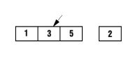

PROG07_Contenidos
Estructuras de datos externas (ficheros).
Caso práctico
Ada está repasando los requisitos de la aplicación informática que están desarrollando para la clínica veterinaria.
En particular, ahora mismo se está centrando en estudiar las necesidades respecto al almacenamiento de datos. Ada piensa que hay ciertas partes de la aplicación que no necesitan una base de datos para guardar los datos, y sería suficiente con emplear ficheros. Por ejemplo, para guardar datos de configuración de la aplicación.
Tras repasar, se reúne con María y Juan para planificar adecuadamente el tema de los ficheros que van a usar en la aplicación, ya que es un asunto muy importante, que no deben dejar aparcado por más tiempo.
Precisamente Antonio, que está matriculado y cursando el módulo de Programación, está repasando para el examen que tiene la semana que viene. Uno de los temas que le "cae" es precisamente el de almacenamiento de información en ficheros.
En esta unidad vamos a estudiar cómo trabajar con ficheros en Java.
1.- Introducción.

Cuando desarrollas programas, en la mayoría de ellos los usuarios pueden pedirle a la aplicación que realice cosas y pueda suministrarle datos con los que se quiere hacer algo. Una vez introducidos los datos y las órdenes, se espera que el programa manipule de alguna forma esos datos, para proporcionar una respuesta a lo solicitado.
Además, normalmente interesa que el programa guarde los datos que se le han introducido, de forma que si el programa termina, los datos no se pierdan y puedan ser recuperados en una sesión posterior. La forma más normal de hacer esto es mediante la utilización de ficheros, que se guardarán en un dispositivo de memoria no volátil (normalmente un disco).
Por tanto, sabemos que el almacenamiento en variables o vectores (arrays) es temporal, los datos se pierden en las variables cuando están fuera de su ámbito o cuando el programa termina. Las computadoras utilizan ficheros para guardar los datos, incluso después de que el programa termine su ejecución. Se suele denominar a los datos que se guardan en ficheros datos persistentes, porque persisten más allá de la ejecución de la aplicación, es decir, siguen existiendo en algún soporte permanente, para poder ser recuperados en una próxima ejecución. Los ordenadores almacenan los ficheros en unidades de almacenamiento secundario como discos duros, discos ópticos, dispositivos USB, discos SSD, etc. En esta unidad veremos cómo hacer con Java estas operaciones de crear, actualizar y procesar ficheros.
A todas estas operaciones, que constituyen un flujo de información del programa con el exterior, se les conoce como Entrada/Salida (E/S).
Distinguimos dos tipos de E/S: la E/S estándar que se realiza con el terminal del usuario y la E/S a través de ficheros, en la que se trabaja con ficheros de disco.
Todas las operaciones de E/S en Java vienen proporcionadas por el paquete estándar del API de Java denominado java.io que incorpora interfaces, clases y excepciones para acceder a todo tipo de ficheros.
El contenido de un archivo puede interpretarse como campos y registros (grupos de campos), dándole un significado al conjunto de bits que en realidad posee.
1.1.- Excepciones.
Cuando se trabaja con archivos, es normal que pueda haber errores, por ejemplo: podríamos intentar leer un archivo que no existe, o podríamos intentar escribir en un archivo para el que no tenemos permisos de escritura. Para manejar todos estos errores debemos utilizar excepcionesExcepciónUna aplicación, ante una entrada de usuario no esperada, o por alguna otra causa, puede producir un error inesperado. Es posible admitir cierto número de errores y continuar su proceso para producir el mejor resultado posible en lugar de producir una salida aparatosa con mensajes de error incomprensibles para el usuario. Esto se consigue con las excepciones. Muchas veces, la acción asociada a una excepción es simplemente producir un mensaje informativo y terminar.. Las dos excepciones más comunes al manejar archivos son:
FileNotFoundException: si no se puede encontrar el archivo.IOException: si no se tienen permisos de lectura o escritura o si el archivo está dañado.
Un esquema básico de uso de la captura y tratamiento de excepciones en un programa, podría ser este, importando el paquete java.io.IOException:
Código de la estructura para gestionar excepciones. (1.00 KB)
Autoevaluación
Para saber más
En los siguientes enlaces hay algunos ejemplos donde se puede ver cómo se trabaja con ficheros de texto y de acceso aleatorio.
2.- Concepto de flujo.
Caso práctico

Antonio está estudiando un poco antes de irse a dormir. Se ha tomado un vaso de leche con cacao y está repasando el concepto de flujo o stream en Java. Entenderlo al principio, cuando lo estudió por primera vez, le costó un poco, pero ya lo entiende a la perfección y piensa que si le sale alguna pregunta en el examen de la semana que viene, sobre esto, seguro que la va a acertar.
Pensar en el flujo de datos como un chorro de agua que fluye por una tubería le ha sido de gran ayuda: los datos son como el agua, de forma que lo que se introduce por la entrada (fuente de datos), va obteniéndose en la salida (aplicación) en el mismo orden que se introdujo, para el caso de un flujo de entrada.
Aunque también podemos habilitar una tubería que lleve el agua en sentido contrario, desde la aplicación a la salida (destino de datos), para el caso de un flujo de salida. Lo que no vamos a tener es una tubería (un flujo) en la que el agua (los datos) pueda circular en los dos sentidos .
La clase Stream representa un flujo o corriente de datos, es decir, un conjunto secuencial de bytes, como puede ser un archivo, un dispositivo de entrada/salida (en adelante E/S), memoria, un conector TCP/IP (Protocolo de Control de Transmisión/Protocolo de Internet), etc.
Cualquier programa realizado en Java que necesite llevar a cabo una operación de entrada/salida lo hará a través de un stream.
Un flujo es una abstracción de aquello que produzca o consuma información. Es una entidad lógica.
Las clases y métodos de E/S que necesitamos emplear son las mismas independientemente del dispositivo con el que estemos actuando, luego, el núcleo de Java, sabrá si tiene que tratar con el teclado, el monitor, un sistema de archivos o un socket de red liberando al programador de tener que saber con quién está interactuando.
La vinculación de un flujo al dispositivo físico la hace el sistema de entrada y salida de Java.
En resumen, será el flujo el que tenga que comunicarse con el sistema operativo concreto y "entendérselas" con él. De esta manera, no tenemos que cambiar absolutamente nada en nuestra aplicación, que va a ser independiente tanto de los dispositivos físicos de almacenamiento como del sistema operativo sobre el que se ejecuta. Esto es primordial en un lenguaje multiplataforma y tan altamente portable como Java.
Autoevaluación
3.- Clases relativas a flujos.
Caso práctico
Otro aspecto importante que Ada trata con María y Juan, acerca de los ficheros para la aplicación de la clínica, es el tipo de ficheros a usar. Es decir, deben estudiar si es conveniente utilizar ficheros para almacenar datos en ficheros de texto, o si deben utilizar ficheros binarios.
María comenta:
—Quizás debemos usar los dos tipos de ficheros, dependerá de qué se vaya a guardar.
Juan le contesta:
—Tienes razón María, pero debemos pensar entonces cómo va el programa a leer y a escribir la información, tendremos que utilizar las clases Java adecuadas según los ficheros que decidamos usar.
Existen dos tipos de flujos, flujos de bytes (byte streams) y flujos de caracteres (character streams).
- Los flujos de caracteres (16 bits) se usan para manipular datos legibles por humanos (por ejemplo un fichero de texto). Vienen determinados por dos clases abstractas:
ReaderyWriter. Dichas clases manejan flujos de caracteres UnicodeUnicodeEstándar de codificación de caracteres diseñado para facilitar el tratamiento informático, transmisión y visualización de textos de múltiples lenguajes y disciplinas técnicas.. De ellas derivan subclases concretas que implementan los métodos definidos, destacando los métodosread()ywrite()que, en este caso, leen y escriben caracteres de datos respectivamente. - Los flujos de bytes (8 bits) se usan para manipular datos binarios, legibles solo por la máquina (por ejemplo un fichero de programa). Su uso está orientado a la lectura y escritura de datos binarios. El tratamiento del flujo de bytes viene determinado por dos clases abstractas que son
InputStreamyOutputStream. Estas dos clases son las que definen los métodos que sus subclases tendrán implementados y, de entre todos, destacanread()ywrite()que leen y escriben bytes de datos respectivamente.
Las clases del paquete java.io se pueden ver en la ilustración. Destacamos las clases relativas a flujos:
BufferedInputStream: permite leer datos a través de un flujo con un buffer intermedio.BufferedOutputStream: implementa los métodos para escribir en un flujo a través de un buffer.FileInputStream: permite leer bytes de un fichero.FileOutputStream: permite escribir bytes en un fichero o descriptor.StreamTokenizer: esta clase recibe un flujo de entrada, lo analiza (parse) y divide en diversos pedazos (tokens), permitiendo leer uno en cada momento.StringReader: es un flujo de caracteres cuya fuente es una cadena de caracteres oString.StringWriter: es un flujo de caracteres cuya salida es un buffer de cadena de caracteres, que puede utilizarse para construir unString.
Destacar que hay clases que se "montan" sobre otros flujos para modificar la forma de trabajar con ellos. Por ejemplo, con BufferedInputStream podemos añadir un buffer a un flujo FileInputStream, de manera que se mejore la eficiencia de los accesos a los dispositivos en los que se almacena el fichero con el que conecta el flujo.
Debes conocer
En el siguiente vídeo puedes clarificar algunos de estos conceptos.
3.1.- Ejemplo comentado de una clase con flujos.
Vamos a ver un ejemplo con una de las clases comentadas, en concreto, con StreamTokenizer.
La clase StreamTokenizer obtiene un flujo de entrada y lo divide en "tokens". El flujo tokenizer puede reconocer identificadores, números y otras cadenas.
El ejemplo que puedes descargarte en el siguiente enlace, muestra cómo utilizar la clase StreamTokenizer para contar números y palabras de un fichero de texto. Se abre el flujo con ayuda de la clase FileReader, y puedes ver cómo se "monta" el flujo StreamTokenizer sobre el FileReader, es decir, que se construye el objeto StreamTokenizer con el flujo FileReader como argumento, y entonces se empieza a iterar sobre él.
Clase para leer palabras y números. (2.00 KB)
El método nextToken() devuelve un int que indica el tipo de token leído. Hay una serie de constantes definidas para determinar el tipo de token:
TT_WORDindica que el token es una palabra.TT_NUMBERindica que el token es un número.TT_EOLindica que se ha leído el fin de línea.TT_EOFindica que se ha llegado al fin del flujo de entrada.
En el código de la clase, apreciamos que se iterará hasta llegar al fin del fichero. Para cada token, se mira su tipo, y según el tipo se incrementa el contador de palabras o de números.
Puedes probar el ejemplo con el siguiente fichero e datos:
Autoevaluación
Indica si la siguiente afirmación es verdadera o falsa.
Retroalimentación
Falso
El sistema operativo es indiferente, el flujo se encargará de los detalles subyacentes en la comunicación, por lo que el programador no tiene que preocuparse de esas cuestiones.
4.- Flujos.
Caso práctico
Ana y Antonio salen de clase. Antonio ha quedado con una amiga y Ana va camino de casa pensando en lo que le explicaron en clase hace unos días. Como se quedó con dudas, también le consultó a María. En concreto, le asaltaban dudas sobre cómo leer y escribir datos por teclado en un programa, y también varias dudas sobre lectura y escritura de información en ficheros. María le solventó las dudas hablándole sobre el tema, pero aún así, tenía que probarlo tranquilamente en casa, haciéndose unos pequeños ejemplos, para comprobar toda la nueva información aprendida.
—Antes de irte —dice Antonio a Ana—, siéntate a hablar con nosotros un rato.
—Bueno, pero me voy a ir enseguida, —contesta Ana.
Hemos visto qué es un flujo y que existe un árbol de clases amplio para su manejo. Ahora vamos a ver en primer lugar los flujos predefinidos, también conocidos como de entrada y salida, y después veremos los flujos basados en bytes y los flujos basados en carácter.
Citas para pensar
"Lo escuché y lo olvidé, lo vi y lo entendí, lo hice y lo aprendí".
Confucio.
Para saber más
Antes, hemos mencionado Unicode. Puedes consultar el origen y más cosas sobre Unicode, en el enlace de la Wikipedia:
4.1.- Flujos predefinidos. Entrada y salida estándar.

Tradicionalmente, los usuarios del sistema operativo Unix, Linux y también MS-DOS, han utilizado un tipo de entrada/salida conocida comúnmente por entrada/salida estándar. El fichero de entrada estándar (stdin) es típicamente el teclado. El fichero de salida estándar (stdout) es típicamente la pantalla (o la ventana del terminal). El fichero de salida de error estándar (stderr) también se dirige normalmente a la pantalla, pero se implementa como otro fichero de forma que se pueda distinguir entre la salida normal y (si es necesario) los mensajes de error.
Java tiene acceso a la entrada/salida estándar a través de la clase System. En concreto, los tres ficheros que se implementan son:
Stdin.System.ines un objeto de tipoInputStream, y está definido en la claseSystemcomo flujo de entrada estándar. Por defecto es el teclado, pero puede redirigirse para cada host o cada usuario, de forma que se corresponda con cualquier otro dispositivo de entrada.Stdout.System.outimplementastdoutcomo una instancia de la clasePrintStream. Se pueden utilizar los métodosprint()yprintln()con cualquier tipo básico Java como argumento.Stderr.System.erres un objeto de tipoPrintStream. Es un flujo de salida definido en la claseSystemy representa la salida de error estándar. Por defecto, es el monitor, aunque es posible redireccionarlo a otro dispositivo de salida.
Para la entrada, se usa el método read() para leer de la entrada estándar:
int System.in.read();- Lee el siguiente
byte (char)de la entrada estándar.
- Lee el siguiente
int System.in.read(byte[] b);- Lee un conjunto de bytes de la entrada estándar y lo almacena en el vector b.
Para la salida, se usa el método print() para escribir en la salida estándar:
System.out.print(String);- Muestra el texto en la consola.
System.out.println(String);- Muestra el texto en la consola y seguidamente efectúa un salto de línea.
Normalmente, para leer valores numéricos, lo que se hace es tomar el valor de la entrada estándar en forma de cadena y entonces usar métodos que permiten transformar el texto a números (int, float, double, etc.) según se requiera.
| Método | Funcionamiento |
|---|---|
byte Byte.parseByte(String) |
Convierte una cadena en un número entero de un byte. |
short Short.parseShort(String) |
Convierte una cadena en un número entero corto. |
int Integer.parseInt(String) |
Convierte una cadena en un número entero. |
long Long.parseLong(String) |
Convierte una cadena en un número entero largo. |
float Float.parseFloat(String) |
Convierte una cadena en un número real simple. |
double Double.parseDouble(String) |
Convierte una cadena en un número real doble. |
boolean Boolean.parseBoolean(String) |
Convierte una cadena en un valor lógico. |
Debes conocer
En este vídeo puedes ver un ejemplo sencillo usando System.in.read().
System.in.read()4.2.- Flujos predefinidos. Entrada y salida estándar. Ejemplo.
Veamos un ejemplo en el que se lee por teclado hasta pulsar la tecla de retorno, en ese momento el programa acabará imprimiendo por la salida estándar la cadena leída.
Para ir construyendo la cadena con los caracteres leídos podríamos usar la clase StringBuffer o la StringBuilder. La clase StringBuffer permite almacenar cadenas que cambiarán en la ejecución del programa. StringBuilder es similar, pero no es síncronaSíncronaEn una ejecución síncrona, la instrucción siguiente a la llamada no se ejecuta hasta que no finalice el método llamado.. De este modo, para la mayoría de las aplicaciones, donde se ejecuta un solo hilo, supone una mejora de rendimiento sobre StringBuffer.
El proceso de lectura ha de estar en un bloque try..catch.

Autoevaluación
Para saber más
En el siguiente enlace tienes un ejemplo e información sobre el uso de StringBuilder y StringBuffer:
4.3.- Flujos basados en bytes.
Este tipo de flujos es el idóneo para el manejo de entradas y salidas de bytes, y su uso por tanto está orientado a la lectura y escritura de datos binarios.
Para el tratamiento de los flujos de bytes, Java tiene dos clases abstractas que son InputStream y OutputStream. Cada una de estas clases abstractas tiene varias subclases instanciables, que controlan las diferencias entre los distintos dispositivos de E/S que se pueden utilizar.
class FileInputStream extends InputStream {
FileInputStream (String fichero) throws FileNotFoundException;
FileInputStream (File fichero) throws FileNotFoundException;
... ... ...
}
class FileOutputStream extends OutputStream {
FileOutputStream (String fichero) throws FileNotFoundException;
FileOutputStream (File fichero) throws FileNotFoundException;
... ... ...
}
OutputStream y InputStream y todas sus subclases, reciben en el constructor el objeto que representa el flujo de datos para el dispositivo de entrada o salida.
Por ejemplo, podemos copiar el contenido de un fichero en otro con este método:
Código de copiar. (1 KB)
Recomendación
En los enlaces siguientes puedes ver la documentación oficial de Oracle sobre FileInputStream y sobre FileOutputStream.
4.4.- Flujos basados en caracteres.

Las clases orientadas al flujo de bytes nos proporcionan la suficiente funcionalidad para realizar cualquier tipo de operación de entrada o salida, pero no pueden trabajar directamente con caracteres Unicode, los cuales están representados por dos bytes. Por eso, se consideró necesaria la creación de las clases orientadas al flujo de caracteres para ofrecernos el soporte necesario para el tratamiento de caracteres.
Para los flujos de caracteres, Java dispone de dos clases abstractas: Reader y Writer.
Reader, Writer, y todas sus subclases, reciben en el constructor el objeto que representa el flujo de datos para el dispositivo de entrada o salida.
Hay que recordar que cada vez que se llama a un constructor se abre el flujo de datos y es necesario cerrarlo cuando no lo necesitemos.
Existen muchos tipos de flujos dependiendo de la utilidad que le vayamos a dar a los datos que extraemos de los dispositivos.
Un flujo puede ser envuelto por otro flujo para tratar el flujo de datos de forma cómoda. Así, un bufferedWriter nos permite manipular el flujo de datos como un buffer, pero si lo envolvemos en un PrintWriter lo podemos escribir con muchas más funcionalidades adicionales para diferentes tipos de datos.
En este ejemplo de código, se ve cómo podemos escribir la salida estándar a un fichero. Cuando se teclee la palabra "salir", se dejará de leer y entonces se saldrá del bucle de lectura.
Podemos ver cómo se usa InputStreamReader que es un puente de flujos de bytes a flujos de caracteres: lee bytes y los decodifica a caracteres. BufferedReader lee texto de un flujo de entrada de caracteres, permitiendo efectuar una lectura eficiente de caracteres, vectores y líneas.
Como vemos en el código, usamos FileWriter para flujos de caracteres, pues para datos binarios se utiliza FileOutputStream.
Código de copiar. (1 KB)
Autoevaluación
Indica si es verdadera o falsa la siguiente afirmación:
Retroalimentación
Verdadero
Reader y Writer se aconseja para los flujos de caracteres, mientras que InputStream y OutputStream se aconsejan para los ficheros binarios.
4.5.- Rutas de los ficheros.
En los ejemplos que vemos en el tema estamos usando la ruta de los ficheros tal y como se usan en MS-DOS, o Windows, es decir, por ejemplo:
c:\\datos\\Programacion\\fichero.txt
Cuando operamos con rutas de ficheros, el carácter separador entre directorios o carpetas suele cambiar dependiendo del sistema operativo en el que se esté ejecutando el programa.
En Java, una barra \ sirve como secuencia de escape de caracteres literales como . , etc. Así, una barra literal se debe escribir como "\\". Es decir, son dos barras por cada literal.
Para evitar problemas en la ejecución de los programas cuando se ejecuten en uno u otro sistema operativo, y por tanto persiguiendo que nuestras aplicaciones sean lo más portables posibles, se recomienda usar en Java: File.separator.
Podríamos hacer una función que al pasarle una ruta nos devolviera la adecuada según el separador del sistema actual, del siguiente modo:
Debes conocer
En el siguiente vídeo puedes ver una explicación bastante extensa sobre manipulación de ficheros y directorios en Java.
Autoevaluación
Indica si es verdadera o falsa la siguiente afirmación.
Retroalimentación
Falso
Es falso, hay que tratarlas adecuadamente para evitar malos funcionamientos de la aplicación
5.- Trabajando con ficheros.
Caso práctico
Juan le comenta a María:
—Tenemos que programar una copia de seguridad diaria de los datos del fichero de texto plano que utiliza el programa para guardar la información.
Mientras María escucha a Juan, recuerda que para copias de seguridad, siempre ha comprobado que la mejor opción es utilizar ficheros secuenciales.

¿Crees que es una buena opción la que piensa María o utilizarías otra en su lugar?
En este apartado vas a seguir profundizando en el manejo de los ficheros. Profundizaremos en cómo leer y escribir en ellos, y también hablaremos de las formas de acceso a los ficheros: secuencial o aleatorio.
Siempre hemos de tener en cuenta que la manera de proceder con ficheros debe ser:
- Abrir o bien crear si no existe el fichero.
- Hacer las operaciones que necesitemos.
- Cerrar el fichero, para no perder la información que se haya modificado o añadido.
También es muy importante el control de las excepciones, para evitar que se produzcan fallos en tiempo de ejecución. Si intentamos abrir sin más un fichero, sin comprobar si existe o no, y no existe, saltará una excepción.
Para saber más
En el siguiente enlace a la wikipedia podrás ver la descripción de varias extensiones que pueden presentar los archivos.
5.1.- Escritura y lectura de información en ficheros.

Acabamos de mencionar los pasos fundamentales para proceder con ficheros: abrir, operar, cerrar.
Además de esas consideraciones, debemos tener en cuenta también las clases Java a emplear, es decir, recuerda que hemos comentado que si vamos a tratar con ficheros de texto, es más eficiente emplear las clases de Reader y Writer, frente a las clases de InputStream y OutputStream que están indicadas para flujos de bytes.
Otra cosa a considerar, cuando se va a hacer uso de ficheros, es la forma de acceso al fichero que se va a utilizar, si va a ser de manera secuencial o bien aleatoria. En un fichero secuencial, para acceder a un dato debemos recorrer todo el fichero desde el principio hasta llegar a su posición. Sin embargo, en un fichero de acceso aleatorioAcceso aleatorioEs la posibilidad de acceder a un elemento arbitrario de una secuencia de datos en el mismo tiempo. podemos posicionarnos directamente en una posición del fichero, y ahí leer o escribir.
Aunque ya has visto un ejemplo que usa BufferedReader, insistimos aquí sobre la filosofía de estas clases, que usan la idea de un buffer.
La idea es que cuando una aplicación necesita leer datos de un fichero, tiene que estar esperando a que el disco en el que está el fichero le proporcione la información.
Un dispositivo cualquiera de memoria masivaMemoria masivaConsiste en un tipo de almacenamiento permanente, no volátil, a diferencia de la memoria principal del ordenador que sí es volátil, pero posee mayor capacidad de almacenamiento que la memoria principal, aunque es más lenta que ésta., por muy rápido que sea, es mucho más lento que la CPU del ordenador.
Así que, es fundamental reducir el número de accesos al fichero a fin de mejorar la eficiencia de la aplicación, y para ello se asocia al fichero una memoria intermedia, el buffer, de modo que cuando se necesita leer un byte del archivo, en realidad se traen hasta el buffer asociado al flujo, ya que es una memoria mucho más rápida que cualquier otro dispositivo de memoria masiva.
Cualquier operación de Entrada/Salida a ficheros puede generar una IOException, es decir, un error de Entrada/Salida. Puede ser por ejemplo, que el fichero no exista, o que el dispositivo no funcione correctamente, o que nuestra aplicación no tenga permisos de lectura o escritura sobre el fichero en cuestión. Por eso, las sentencias que involucran operaciones sobre ficheros, deben ir siempre en un bloque try-catch.
Para saber más
En este tutorial aprenderás a crear carpetas y archivos en la consola MS-DOS.
Autoevaluación
Señala si es verdadera o es falsa la siguiente afirmación:
Retroalimentación
Falso
Se trata de disminuir esos accesos.
5.2.- Ficheros binarios y ficheros de texto (I).
Ya comentamos anteriormente que los ficheros se utilizan para guardar la información en un soporte: disco duro, disquetes, memorias usb, dvd, etc., y posteriormente poder recuperarla. También distinguimos dos tipos de ficheros: los de texto y los binarios.
En los ficheros de texto la información se guarda como caracteres. Esos caracteres están codificados en Unicode, o en ASCII u otras codificaciones de texto.
En la siguiente porción de código puedes ver cómo para un fichero existente, que en este caso es texto.txt, averiguamos la codificación que posee, usando el método getEncoding()

Obtención del tipo de codificación. (1 KB)
Para archivos de texto, se puede abrir el fichero para leer usando la clase FileReader. Ésta clase nos proporciona métodos para leer caracteres. Cuando nos interese no leer carácter a carácter, sino leer líneas completas, podemos usar la clase BufferedReader a partir de FileReader. Lo podemos hacer de la siguiente forma:
File archivo = new File ("C:\\fich.txt");
FileReader fr = new FileReader (archivo);
BufferedReader br = new BufferedReader(fr);
...
String linea = br.readLine();
Para escribir en archivos de texto lo podríamos hacer, teniendo en cuenta:
FileWriter fichero = null;
PrintWriter pw = null;
fichero = new FileWriter("c:/fich2.txt");
pw = new PrintWriter(fichero);
pw.println("Linea de texto");
...
Si el fichero al que queremos escribir existe y lo que queremos es añadir información, entonces pasaremos el segundo parámetro como true:
FileWriter("c:/fich2.txt",true);
Para saber más
En el siguiente enlace a wikipedia puedes ver el código ASCII.
5.2.1.- Ficheros binarios y ficheros de texto (II).

Los ficheros binarios almacenan la información en bytes, codificada en binario, pudiendo ser de cualquier tipo: fotografías, números, letras, archivos ejecutables, etc.
Los archivos binarios guardan una representación de los datos en el fichero. O sea que, cuando se guarda texto no se guarda el texto en sí, sino que se guarda su representación en código UTF-8UTF-8Es un formato de codificación de caracteres Unicode usando símbolos de longitud variable..
Para leer datos de un fichero binario, Java proporciona la clase FileInputStream. Dicha clase trabaja con bytes que se leen desde el flujo asociado a un fichero. Aquí puedes ver un ejemplo comentado.
Leer de fichero binario con buffer. (3.00 KB)
Para escribir datos a un fichero binario, la clase nos permite usar un fichero para escritura de bytes en él, es la claseFileOutputStream. La filosofía es la misma que para la lectura de datos, pero ahora el flujo es en dirección contraria, desde la aplicación que hace de fuente de datos hasta el fichero, que los consume.
En el siguiente fichero PDF puedes ver un esquema de cómo utilizar buffer para optimizar la lectura de teclado desde consola, por medio de las envolturas, podemos usar métodos como readline(), de la clase BufferedReader, que envuelve a un objeto de la clase InputStreamReader.
Envolturas (pdf - 103.94 KB)
Autoevaluación
Señala si es verdadera o falsa la siguiente afirmación:
Retroalimentación
Falso
Se trata en efecto deFileInputStream.
Debes conocer
Tienes ejemplos de lectura y escritura de ficheros en Java, en el siguiente enlace:
Lectura y escritura de ficheros en Java, con ejemplos.
También te recomendamos que veas detenidamente estos dos vídeos, que explican con detalle el acceso a ficheros en Java.
5.3.- Modos de acceso. Registros.

En Java no se impone una estructura en un fichero, por lo que conceptos como el de registro que si existen en otros lenguajes, en principio no existen en los archivos que se crean con Java. Por tanto, los programadores deben estructurar los ficheros de modo que cumplan con los requerimientos de sus aplicaciones.
Así, el programador definirá su registro con el número de bytes que le interesen, moviéndose luego por el fichero teniendo en cuenta ese tamaño que ha definido.
Se dice que un fichero es de acceso directo o de organización directa cuando para acceder a un registro n cualquiera, no se tiene que pasar por los n-1 registros anteriores. En caso contrario, estamos hablando de ficheros secuenciales.
Con Java se puede trabajar con ficheros secuenciales y con ficheros de acceso aleatorio.
En los ficheros secuenciales, la información se almacena de manera secuencial, de manera que para recuperarla se debe hacer en el mismo orden en que la información se ha introducido en el archivo. Si por ejemplo queremos leer el registro del fichero que ocupa la posición tres (en la ilustración sería el que contiene el número 5), tendremos que abrir el fichero y leer los primeros tres registros, hasta que finalmente leamos el registro número tres.
Por el contrario, si se tratara de un fichero de acceso aleatorio, podríamos acceder directamente a la posición tres del fichero, o a la que nos interesara.
Autoevaluación
5.4.- Acceso secuencial.
En el siguiente ejemplo vemos cómo se escriben datos en un fichero secuencial: el nombre y apellidos de una persona utilizando el método writeUTF() que proporciona DataOutputStream, seguido de su edad que la escribimos con el método writeInt() de la misma clase. A continuación escribimos lo mismo para una segunda persona y de nuevo para una tercera. Después cerramos el fichero. Y ahora lo abrimos de nuevo para ir leyendo de manera secuencial los datos almacenados en el fichero, y escribiéndolos a consola.
Escribir y leer. (3.00 KB)
Si miras el ejemplo y la documentación en la API del método writeUTF(), verás que lo primero que hace antes de escribir una cadena es guardar en el flujo de salida dos bytes que indican el número de bytes que se van a usar para escribir esa cadena. De esta forma, cuando usemos el método readUTF() para leer dicha cadena, java sabe dónde termina, cuándo tiene que parar de leer bytes para esa cadena, sin que nosotros tengamos que preocuparnos de ello.
Con lo que sí tenemos que ser cuidadosos, a la hora de leer del fichero, es con usar los métodos readUTF() y readInt() en el mismo orden en que habíamos usado antes writeUTF() y writeInt() para escribir en el fichero.
Por tanto para buscar información en un fichero secuencial, tendremos que abrir el fichero e ir leyendo registros hasta encontrar el registro que buscamos.
¿Y si queremos eliminar un registro en un fichero secuencial, qué hacemos? Esta operación es un problema, puesto que no podemos quitar el registro y reordenar el resto. Una opción, aunque costosa, sería crear un nuevo fichero. Recorremos el fichero original y vamos copiando registros en el nuevo hasta llegar al registro que queremos borrar. Ese no lo copiamos al nuevo, y seguimos copiando hasta el final, el resto de registros al nuevo fichero. De este modo, obtendríamos un nuevo fichero que sería el mismo que teníamos pero sin el registro que queríamos borrar. Por tanto, si se prevé que se va a borrar en el fichero, no es recomendable usar un fichero de este tipo, o sea, secuencial.
Autoevaluación
Señala si es verdadera o es falsa la siguiente afirmación:
Retroalimentación
Falso
Se ha de recorrer el fichero desde el principio.
5.5.- Acceso aleatorio.
A veces no necesitamos leer un fichero de principio a fin, sino acceder al fichero como si fuera una base de datos, donde se accede a un registro concreto del fichero. Java proporciona la clase RandomAccessFile para este tipo de entrada/salida.
La clase RandomAccessFile permite utilizar un fichero de acceso aleatorio en el que el programador define el formato de los registros.
RandomAccessFile objFile = new RandomAccessFile( ruta, modo );
Donde ruta es la dirección física en el sistema de archivos y modo puede ser:
- "r" para sólo lectura.
- "rw" para lectura y escritura.
La clase RandomAccessFile implementa los interfaces DataInput y DataOutput. Para abrir un archivo en modo lectura haríamos:
RandomAccessFile in = new RandomAccessFile(“input.dat”, “r”);
Para abrirlo en modo lectura y escritura:
RandomAccessFile inOut = new RandomAccessFile(“input.dat”, “rw”);
Esta clase permite leer y escribir sobre el fichero, no se necesitan dos clases diferentes.
Hay que especificar el modo de acceso al construir un objeto de esta clase: sólo lectura o lectura/escritura.
Dispone de métodos específicos de desplazamiento como seek y skipBytes para poder moverse de un registro a otro del fichero, o posicionarse directamente en una posición concreta del fichero.
No está basada en el concepto de flujos o streams.
En el siguiente enlace vemos cómo crear un fichero, cómo podemos acceder, y actualizar información en él.
Para saber más
En el siguiente documento tienes un ejemplo sobre el uso de ficheros de acceso aleatorio.
Autoevaluación
Indica si es verdadera o es falsa la siguiente afirmación:
Retroalimentación
Verdadero
Esos son los parámetros para el modo lectura y escritura.
6.- Aplicaciones del almacenamiento de información en ficheros.
Caso práctico
 Antonio ha quedado con Ana para estudiar sobre el tema de ficheros. De camino a la biblioteca, Ana le pregunta a Antonio:
Antonio ha quedado con Ana para estudiar sobre el tema de ficheros. De camino a la biblioteca, Ana le pregunta a Antonio:
—¿Crees que los ficheros se utilizan realmente, o ya están desfasados y sólo se utilizan las bases de datos?
Antonio, tras pensarlo un momento, le dice a Ana:
—Yo creo que sí, piensa en el mp3 que usas muchas veces, la música va grabada en ese tipo de ficheros.
¿Has pensado la diversidad de ficheros que existe, según la información que se guarda?
Las fotos que haces con tu cámara digital, o con el móvil, se guardan en ficheros. Así, existe una gran cantidad de ficheros de imagen, según el método que usen para guardar la información. Por ejemplo, tenemos los ficheros de extensión: .jpg, .tiff, gif, .bmp, etc.
La música que oyes en tu mp3 o en el reproductor de mp3 de tu coche, está almacenada en ficheros que almacenan la información en formato mp3.
Los sistemas operativos, como Linux, Windows, etc., están constituidos por un montón de instrucciones e información que se guarda en ficheros.
El propio código fuente de los lenguajes de programación, como Java, C, etc., se guarda en ficheros de texto plano la mayoría de veces.
También se guarda en ficheros las películas en formato .avi, .mp4, etc.
Y por supuesto, se usan mucho actualmente los ficheros XML, que al fin y al cabo son ficheros de texto plano, pero que siguen una estructura determinada. XML se emplea mucho para el intercambio de información estructurada entre diferentes plataformas.
Para saber más
En los siguientes enlaces a la wikipedia puedes saber más sobre el formato Mp3 y flac.
Autoevaluación
Indica si es verdadera o falsa la siguiente afirmación:
Retroalimentación
Falso
Se trata de una imagen, mp3 sería un ejemplo de fichero para guardar música.
7.- Utilización de los sistemas de ficheros.
Caso práctico
Ana está estudiando en la biblioteca, junto a Antonio. Está repasando lo que le explicaron en clase sobre las operaciones relativas a ficheros en Java. En concreto, está mirando lo relativo a crear carpetas o directorios, listar directorios, borrarlos, operar en definitiva con ellos. Va a repasar ahora en la biblioteca, para tener claros los conceptos y cuando llegue de vuelta a casa, probar a compilar algunos ejemplos que a ella misma se le ocurran.
Has visto en los apartados anteriores cómo operar en ficheros: abrirlos, cerrarlos, escribir en ellos, etc.
Lo que no hemos visto es lo relativo a crear y borrar directorios o por ejemplo poder filtrar archivos, es decir, buscar solo aquellos que tengan determinada característica, por ejemplo, que su extensión sea: .txt.
Ahora veremos cómo hacer estas cosas, y también cómo borrar ficheros, y crearlos, aunque crearlos ya lo hemos visto en algunos ejemplos anteriores.
Para saber más
Accediendo a este enlace, tendrás una visión detallada sobre la organización de ficheros.
7.1.- Clase File.
La clase File proporciona una representación abstracta de ficheros y directorios.
Esta clase, permite examinar y manipular archivos y directorios, independientemente de la plataforma en la que se esté trabajando: Linux, Windows, etc.
Las instancias de la clase File representan nombres de archivo, no los archivos en sí mismos.
El archivo correspondiente a un nombre dado podría ser que no existiera, por ello, habrá que controlar las posibles excepciones.
Al trabajar con File, las rutas pueden ser:
- Relativas al directorio actual.
- Absolutas si la ruta que le pasamos como parámetro empieza por
- La barra "/" en Unix, Linux.
- Letra de unidad (C:, D:, etc.) en Windows.
- UNC(universal naming convention) en windows, como por ejemplo:
File miFile=new File("\\\\mimaquina\\download\\prueba.txt");
A través del objeto File, un programa puede examinar los atributos del archivo, cambiar su nombre, borrarlo o cambiar sus permisos. Dado un objeto de la clase File, podemos hacer las siguientes operaciones con él:
- Renombrar el archivo, con el método
renameTo(). El objetoFiledejará de referirse al archivo renombrado, ya que elStringcon el nombre del archivo en el objetoFileno cambia. - Borrar el archivo, con el método
delete(). También, condeleteOnExit()se borra cuando finaliza la ejecución de la máquina virtual Java. - Crear un nuevo fichero con un nombre único. El método estático
createTempFile()crea un fichero temporal y devuelve un objetoFileque apunta a él. Es útil para crear archivos temporales, que luego se borran, asegurándonos tener un nombre de archivo no repetido. - Establecer la fecha y la hora de modificación del archivo con
setLastModified(). Por ejemplo, se podría hacer:new File("prueba.txt").setLastModified(new Date().getTime());para establecerle la fecha actual al fichero que se le pasa como parámetro, en este caso prueba.txt. - Crear un directorio con el método
mkdir(). También existemkdirs(), que crea los directorios superiores si no existen. - Listar el contenido de un directorio. Los métodos
list()ylistFiles()listan el contenido de un directoriolist()devuelve un vector de String con los nombres de los archivos,listFiles()devuelve un vector de objetosFile. - Listar los nombres de archivo de la raíz del sistema de archivos, mediante el método estático
listRoots().
Autoevaluación
Indica si es verdadera o falsa la siguiente afirmación:
Retroalimentación
Falso
En efecto, representa un nombre de archivo y no el archivo en sí mismo.
7.2.- Interface FilenameFilter.
En ocasiones nos interesa ver la lista de los archivos que encajan con un determinado criterio.
Así, nos puede interesar un filtro para ver los ficheros modificados después de una fecha, o los que tienen un tamaño mayor del que indiquemos, etc.
El interface FilenameFilter se puede usar para crear filtros que establezcan criterios de filtrado relativos al nombre de los ficheros. Una clase que lo implemente debe definir e implementar el método:
boolean accept(File dir, String nombre)
Este método devolverá verdadero (true), en el caso de que el fichero cuyo nombre se indica en el parámetro nombre aparezca en la lista de los ficheros del directorio indicado por el parámetro dir.
En el siguiente ejemplo vemos cómo se listan los ficheros de la carpeta c:\datos que tengan la extensión .odt. Usamos try y catch para capturar las posibles excepciones, como que no exista dicha carpeta.
En el siguiente proyecto tienes un pequeño ejemplo de uso:
Filtrar ficheros. (32.00 KB)
Autoevaluación
Indica si la siguiente afirmación es verdadera o falsa:
Retroalimentación
Falso
En efecto, se debe implementar siempre.
7.3.- Creación y eliminación de ficheros y directorios.
Podemos crear un fichero del siguiente modo:
- Creamos el objeto que encapsula el fichero, por ejemplo, suponiendo que vamos a crear un fichero llamado miFichero.txt, en la carpeta
C:\prueba, haríamos:File fichero = new File("c:\\prueba\\miFichero.txt"); - A partir del objeto
Filecreamos el fichero físicamente, con la siguiente instrucción, que devuelve un boolean con valor true si se creó correctamente, o false si no se pudo crear:fichero.createNewFile()
Para borrar un fichero, podemos usar la clase File, comprobando previamente si existe, del siguiente modo:
- Fijamos el nombre de la carpeta y del fichero con:
File fichero = new File("C:\\prueba", "agenda.txt"); - Comprobamos si existe el fichero con
exists()y si es así lo borramos con:if (fichero.exists())
fichero.delete();
Para crear directorios, podríamos hacer lo siguiente (se crea un directorio en la unidad C, en la raíz, y también tres carpetas en la carpeta del proyecto):
Crear directorios. (12 KB)
Para borrar un directorio con Java tenemos que borrar cada uno de los ficheros y directorios que éste contenga. Al poder almacenar otros directorios, se podría recorrer recursivamente el directorio para ir borrando todos los ficheros.
Se puede listar el contenido del directorio con:
File[] ficheros = directorio.listFiles();
y entonces poder ir borrando. Si el elemento es un directorio, lo sabemos mediante el método isDirectory,
A partir de Java 7 se introdujo un nuevo mecanismo de gestión de errores conocido como "try-with-resources" que facilita cerrar recursos que se utilizan en un bloque try-catch.
Debes conocer
En el siguiente enlace tienes un ejemplo de uso de la estructura try-with-resources.
8.- Almacenamiento de objetos en ficheros. Persistencia. Serialización.
Caso práctico

Para la aplicación de la clínica veterinaria María le propone a Juan emplear un fichero para guardar los datos de los clientes de la clínica.
—Como vamos a guardar datos de la clase Cliente, tendremos que serializar los datos.

{kind=link}
{kind=link}
{kind=link}
{kind=link}
{kind=link}
{kind=link}
{kind=link}
{kind=link}
¿Qué es la serialización? Es un proceso por el que un objeto se convierte en una secuencia de bytes con la que más tarde se podrá reconstruir el valor de sus variables. Esto permite guardar un objeto en un archivo.
Para serializar un objeto:
- Este objeto debe implementar el interface
java.io.Serializable. Este interface no tiene métodos, sólo se usa para informar a la JVM (Java Virtual Machine) que un objeto va a ser serializado. - Todos los objetos incluidos en él tienen que implementar el interfaz
Serializable.
Todos los tipos primitivos en Java son serializables por defecto. (Al igual que los arrays y otros muchos tipos estándar).
Para leer y escribir objetos serializables a un stream se utilizan las clases java: ObjectInputStream y ObjectOutputStream.
En el siguiente ejemplo se puede ver cómo leer un objeto serializado que se guardó antes. En este caso, se trata de un String serializado:
FileInputStream fichero = new FileInputStream(“str.out”);
ObjectInputStream objetostream = new ObjectInputStream(fichero);
Object objeto = objetostream.readObject();
Así vemos que readObject lee un objeto desde el flujo de entrada fichero. Cuando se leen objetos desde un flujo, se debe tener en cuenta qué tipo de objetos se esperan en el flujo, y se han de leer en el mismo orden en que se guardaron.
Una cuestión importante a tener en cuenta en una clase serializable es declarar un atributo que se debe llamar: serialVersionUID y que debemos definir como static, final y de tipo long. Oracle recomienda encarecidamente que toda clase serializable declare explícitamente un valor serialVersionUID, para evitar InvalidClassExceptions inesperados durante la deserialización. También se recomienda encarecidamente que las declaraciones explícitas serialVersionUID utilicen el modificador private siempre que sea posible.
Así, por ejemplo, en una clase serializable, tendremos:
private static final long serialVersionUID = 42L;
Autoevaluación
Indica si es verdadera o falsa la siguiente afirmación:
Retroalimentación
Falso
Debemos asegurarnos también de que todos los objetos incluidos en él implementen el interface Serializable.Para saber más
En los siguientes enlaces, puedes ver un poco más sobre serialización.
En el siguiente enlace puedes ver la documentación de Oracle sobre Serializable, y entre otras cosas se puede ver lo que hemos dicho sobre serialVersionUID:
8.1.- Serialización: utilidad.

La serialización en Java se desarrolló para utilizarse con RMIRMIPermite a un objeto en una máquina virtual invocar métodos de otro objeto en otra máquina virtual, que podría estar perfectamente en otro ordenador diferente, enviando parámetros y devolviendo valores a través de Internet.. RMI necesitaba un modo de convertir los parámetros necesarios a enviar a un objeto en una máquina remota, y también para devolver valores desde ella, en forma de flujos de bytes. Para datos primitivos es fácil, pero para objetos más complejos no tanto, y ese mecanismo es precisamente lo que proporciona la serialización.
El método writeObject se utiliza para guardar un objeto a través de un flujo de salida. El objeto pasado a writeObject debe implementar el interfaz Serializable.
FileOutputStream fisal = new FileOutputStream(“cadenas.out”);
ObjectOutputStream oos = new ObjectOutputStream(fisal);
Oos.writeObject();
La serialización de objetos se emplea también en la arquitectura de componentes software JavaBean. Las clases bean se cargan en herramientas de construcción de software visual, como NetBeans. Con la paleta de diseño se puede personalizar el bean asignando fuentes, tamaños, texto y otras propiedades.
Una vez que se ha personalizado el bean, para guardarlo, se emplea la serialización: se almacena el objeto con el valor de sus campos en un fichero con extensión .ser, que suele emplazarse dentro de un fichero .jar.
Ejercicio Resuelto
A continuación, puedes ver el código de un ejemplo muy ilustrativo sobre serialización. Supongamos que tenemos una clase Persona, con una subclase Socio, que tiene a su vez varias subclases. Por simplificar, supondremos dos: SocioTitularFamiliar y SocioTitularIndividual. Ahora se me presenta la necesidad de guardar un array con socios en un fichero, para posteriormente recuperarlo, ¿cómo lo hago?
Para saber más
En este enlace a puedes ver un vídeo en el que se crea una aplicación sobre serialización. No está hecha con NetBeans, sino con Eclipse, pero eso no presenta ningún inconveniente.
9.- Tratamiento de documentos estructurados XML.
Caso práctico
Ana ya ha terminado lo principal, ya es capaz de procesar el pedido y de almacenar la información en estructuras de memoria que luego podrá proyectar a un documento XML, incluso ha ordenado los artículos en base al código de artículo, definitivamente era bastante más fácil de lo que ella pensaba.
Ahora le toca la tarea más ardua de todas, o al menos así lo ve ella, generar el documento XML con la información del pedido. ¿Le resultará muy difícil?
{kind=link}
¿Qué es XML?
XML es un mecanismo extraordinariamente sencillo para estructurar, almacenar e intercambiar información entre sistemas informáticos. XML define un lenguaje de etiquetas, muy fácil de entender pero con unas reglas muy estrictas, que permite encapsular información de cualquier tipo para posteriormente ser manipulada. Se ha extendido tanto que hoy día es un estándar en el intercambio de información entre sistemas.
La información en XML va escrita en texto legible por el ser humano, pero no está pensada para que sea leída por un ser humano, sino por una máquina. La información va codificada generalmente en UnicodeUnicode.Codificación de caracteres capaz de codificar caracteres y símbolos de múltiples idiomas., pero estructurada de forma que una máquina es capaz de procesarla eficazmente. Esto tiene una clara ventaja: si necesitamos modificar algún dato de un documento en XML, podemos hacerlo con un editor de texto planoEditor de texto plano. Editor de texto que no admite formateado, solo caracteres dentro de una codificación de caracteres como Unicode o ASCII (American Standard Code for Information Interchange).. Veamos los elementos básicos del XML:
| Elemento | Descripción | Ejemplo |
|---|---|---|
| Cabecera o declaración del XML. | Es lo primero que encontramos en el documento XML y define cosas como, por ejemplo, la codificaciónCodificaciónHace referencia a cómo se codifican los caracteres de un documento de texto, es decir, cómo se convierten los símbolos humanos de escritura a ceros y unos: Unicode, ASCII, etc. del documento XML (que suele ser ISO-8859-1 o UTF-8) y la versión del estándar XML que sigue nuestro documento XML. |
|
| Etiquetas. | Una etiqueta es un delimitador de datos, y a su vez, un elemento organizativo. La información va entre las etiquetas de apertura ("<pedido>") y cierre ("</pedido>"). Fíjate en el nombre de la etiqueta ("pedido"), debe ser el mismo tanto en el cierre como en la apertura, respetando mayúsculas. |
|
| Atributos. | Una etiqueta puede tener asociado uno o más atributos. Siempre deben ir detrás del nombre de la etiqueta, en la etiqueta de apertura, poniendo el nombre del atributo seguido de igual y el valor encerrado entre comillas. Siempre debes dejar al menos un espacio entre los atributos. |
|
| Texto. | Entre el cierre y la apertura de una etiqueta puede haber texto. |
|
| Etiquetas sin contenido. | Cuando una etiqueta no tiene contenido, no tiene porqué haber una etiqueta de cierre, pero no debes olvidar poner la barra de cierre ("/") al final de la etiqueta para indicar que no tiene contenido. |
|
| Comentario. | Es posible introducir comentarios en XML y estos van dirigidos generalmente a un ser humano que lee directamente el documento XML. |
|
El nombre de la etiqueta y de los nombres de los atributos no deben tener espacios. También es conveniente evitar los puntos, comas y demás caracteres de puntuación. En su lugar se puede usar el guión bajo ("<pedido_enviado> … </pedido_enviado>").
Autoevaluación
Solución
9.1.- ¿Qué es un documento XML?

Los documentos XML son documentos que solo utilizan los elementos expuestos en el apartado anterior (declaración, etiquetas, comentarios, etc.) de forma estructurada. Siguen una estructura de árbol, pseudo-jerárquica, permitiendo agrupar la información en diferentes niveles, que van desde la raíz a las hojas.
Para comprender la estructura de un documento XML vamos a utilizar una terminología afín a la forma en la cual procesaremos los documentos XML. Un documento XML está compuesto desde el punto de vista de programación por nodos, que pueden (o no) contener otros nodos. Todo es un nodo:
- El par formado por la etiqueta de apertura ("
<etiqueta>") y por la de cierre ("</etiqueta>"), junto con todo su contenido (elementos, atributos y texto de su interior) es un nodo llamado elemento (Elementdesde el punto de vista de programación). Un elemento puede contener otros elementos, es decir, puede contener en su interior subetiquetas, de forma anidada. - Un atributo es un nodo especial llamado atributo (
Attrdesde el punto de vista de programación), que solo puede estar dentro de un elemento (concretamente dentro de la etiqueta de apertura). - El texto es un nodo especial llamado texto (
Text), que solo puede estar dentro de una etiqueta. - Un comentario es un nodo especial llamado comentario (
Comment), que puede estar en cualquier lugar del documento XML. - Y por último, un documento (
Document) es un nodo que contiene una jerarquía de nodos en su interior. Está formado opcionalmente por una declaración, opcionalmente por uno o varios comentarios y obligatoriamente por un único elemento.
Esto es un poco lioso, ¿verdad? Vamos a clarificarlo con ejemplos.
Primero, tenemos que entender la diferencia entre nodos padre y nodos hijo. Un elemento (par de etiquetas) puede contener varios nodos hijo, que pueden ser texto u otros elementos. Por ejemplo:
<padre att1="valor" att2="valor">
texto 1
<ethija> texto 2 </ethija>
</padre>
En el ejemplo anterior, el elemento padre tendría dos hijos: el texto "texto 1", sería el primer hijo, y el elemento etiquetado como "ethija", el segundo. Tendría también dos atributos, que serían nodos hijo también, pero que se consideran especiales y la forma de acceso es diferente. A su vez, el elemento "ethija" tiene un nodo hijo, que será el texto "texto 2". ¿Fácil no?
Ahora veamos el conjunto, un documento estará formado, como se dijo antes, por algunos elementos opcionales, y obligatoriamente por un único elemento (es decir, por un único par de etiquetas que lo engloba todo) que contendrá internamente el resto de información como nodos hijo. Por ejemplo:
<?xml version="1.0" encoding="ISO-8859-1"?>
<pedido>
<cliente> texto </cliente>
<codCliente> texto </codCliente>
...
</pedido>
La etiqueta pedido del ejemplo anterior, será por tanto el elemento raíz del documento y dentro de él estará toda la información del documento XML. Ahora seguro que es más fácil, ¿no?
Se puede y se suele usar indentación para que visualmente se vea con más claridad qué etiquetas van dentro de qué otras, aunque su uso no es obligado, ya que como dijimos antes, el XML no está pensado para ser leído por humanos, (aunque puedan hacerlo) sino por la aplicación de forma automática. Para el ordenador, la indentación es irrelevante.
Para saber más
En el siguiente enlace podrás encontrar una breve guía, en inglés, de las tecnologías asociadas a XML actuales. Son bastantes y su potencial es increíble.
Breve guía de las tecnologías XML.
En este otro enlace podrás ver una serie de vídeos de introducción a XML con abundantes ejemplos que te podrán ser muy útiles a la hora de entender su estructura y funcionamiento:
Colección de vídeos de introducción a XML
9.2.- Librerías para procesar documentos XML (I). Convertir el archivo XML a árbol DOM
¿Quién establece las bases del XML?
El W3C o World Wide Web Consortium (Consorcio para la gran red mundial) es la entidad que establece las bases del XML. Dicha entidad, además de describir cómo es el XML internamente, define un montón de tecnologías estándar adicionales para verificar, convertir y manipular documentos XML. Nosotros no vamos a explorar todas las tecnologías de XML aquí (son muchísimas), solamente vamos a usar dos de ellas, aquellas que nos van a permitir manejar de forma simple un documento XML:
- Procesadores de XML. Son librerías para leer documentos XML y comprobar que están bien formados. En Java, el procesador más utilizado es SAX, lo usaremos pero sin percatarnos casi de ello.
- XML DOM (Modelo de Objetos para Documento). Permite transformar un documento XML en un modelo de objetos (de hecho DOM significa Document Object Model), accesible cómodamente desde el lenguaje de programación. DOM almacena cada elemento, atributo, texto, comentario, etc. del documento XML en una estructura tipo árbol compuesta por nodos fácilmente accesibles, sin perder la jerarquía del documento. A partir de ahora, la estructura DOM que almacena un XML la llamaremos árbol o jerarquía de objetos DOM.
En Java, éstas y otras funciones están implementadas en la librería JAXP (Java API for XML Processing), y ya van incorporadas en la edición estándar de Java (Java SE). En primer lugar vamos a ver cómo convertir un documento XML a un árbol DOM, y viceversa, para después ver cómo manipular desde Java un árbol DOM.
Para cargar un documento XML tenemos que hacer uso de un procesador de documentos XML (conocidos generalmente como parsers) y de un constructor de documentos DOM. Las clases de Java que tendremos que utilizar son:
javax.xml.parsers.DocumentBuilder: será el procesador y transformará un documento XML a árbol DOM, se le conoce como constructor de documentos.javax.xml.parsers.DocumentBuilderFactory: permite crear un constructor de documentos, es una fábrica de constructores de documentos.org.w3c.dom.Document: una instancia de esta clase es un documento XML pero almacenado en memoria siguiendo el modelo DOM. Cuando el parser procesa un documento XML creará una instancia de la claseDocumentcon el contenido del documento XML.
Ahora bien, ¿esto cómo se usa?
Pues de una forma muy fácil, en pocas líneas (no olvides importar las tres clases anteriores, DocumentBuilder, DocumentBuilderFactory y Document):
try {
// 1º Creamos una nueva instancia de un fábrica de constructores de documentos.
DocumentBuilderFactory dbf = DocumentBuilderFactory.newInstance();
// 2º A partir de la instancia anterior, fabricamos un constructor de documentos, que procesará el XML.
DocumentBuilder db = dbf.newDocumentBuilder();
// 3º Procesamos el documento (almacenado en un archivo) y lo convertimos en un árbol DOM.
Document documento=db.parse(CaminoAArchivoXml);
} catch (Exception ex) {
System.out.println("¡Error! No se ha podido cargar el documento XML.");
}
En este sentido (convertir el archivo XML a árbol DOM) no tiene mucha complicación, pero es un pelín más complicado para hacer el camino inverso (pasar el DOM a XML).
Este proceso puede generar hasta tres tipos de excepciones diferentes. La más común, que el documento XML esté mal formado, por lo que tienes que tener cuidado con la sintaxis XML.
Autoevaluación
9.2.1.- Librerías para procesar documentos XML (II). Transformar el árbol DOM en archivo XML.
¿Y cómo paso la jerarquía o árbol de objetos DOM a XML?
Como hemos dicho en el apartado anterior, en Java esto es un pelín más complicado que la operación inversa, y requiere el uso de un montón de clases del paquete java.xml.transform, pues la idea es transformar el árbol DOM en un archivo de texto que contiene el documento XML.
Las clases que tendremos que usar son:
javax.xml.transform.TransformerFactory. Fábrica de transformadores, permite crear un nuevo transformador que convertirá el árbol DOM a XML.javax.xml.transform.Transformer. Transformador que permite pasar un árbol DOM a XML.javax.xml.transform.TransformerException. Excepción lanzada cuando se produce un fallo en la transformación.javax.xml.transform.OutputKeys. Clase que contiene opciones de salida para el transformador. Se suele usar para indicar la codificación de salida (generalmente UTF-8) del documento XML generado.javax.xml.transform.dom.DOMSource. Clase que actuará de intermediaria entre el árbol DOM y el transformador, permitiendo al transformador acceder a la información del árbol DOM.javax.xml.transform.stream.StreamResult. Clase que actuará de intermediaria entre el transformador y el archivo oStringdonde se almacenará el documento XML generado.java.io.File. Clase que, como posiblemente sabrás, permite leer y escribir en un archivo almacenado en disco. El archivo será obviamente el documento XML que vamos a escribir en el disco.
Esto es un poco lioso, ¿o no? No lo es tanto cuando se ve un ejemplo de cómo realizar el proceso de transformación de árbol DOM a XML, así que veamos ese ejemplo:
try {
// 1º Creamos una instancia de la clase File para acceder al archivo donde guardaremos el XML.
File f=new File(CaminoAlArchivoXML);
//2º Creamos una nueva instancia del transformador a través de la fábrica de transformadores.
Transformer transformer = TransformerFactory.newInstance().newTransformer();
//3º Establecemos algunas opciones de salida, como por ejemplo, la codificación de salida.
transformer.setOutputProperty(OutputKeys.INDENT, "yes");
transformer.setOutputProperty(OutputKeys.ENCODING, "UTF-8");
//4º Creamos el StreamResult, que intermediará entre el transformador y el archivo de destino.
StreamResult result = new StreamResult(f);
//5º Creamos el DOMSource, que intermediará entre el transformador y el árbol DOM.
DOMSource source = new DOMSource(doc);
//6º Realizamos la transformación.
transformer.transform(source, result);
} catch (TransformerException ex) {
System.out.println("¡Error! No se ha podido llevar a cabo la transformación.");
}
Debes conocer
A continuación te adjuntamos, cortesía de la casa, una de esas clases anti-estrés, que nos permitirá hacer estas operaciones sin tener que reinventar la rueda cada vez, ni tener que acordarnos de tantos detalles... Utilízala todo lo que quieras, con ella podrás convertir un documento XML a árbol DOM y viceversa de forma sencilla. El documento XML puede estar almacenado en un archivo o en una cadena de texto (e incluso en Internet, para lo que necesitas el URI (Identificador de Recursos Unificado)). Los métodos estáticos domToXml() te permitirán pasar el árbol DOM a XML, y los métodos stringToDom() y xmlToDom() te permitirán pasar un documento XML a un árbol DOM .
También contiene el método crearDOMVacio() que permite crear un árbol DOM vacío, útil para empezar un documento XML de cero.
9.3.- Manipulación de documentos XML (I). Obtener el elemento raíz, y buscar un elemento.

Bien, ahora sabes cargar un documento XML a árbol DOM y de árbol DOM a XML, pero, ¿cómo se modifica el árbol DOM?
Cómo ya se dijo antes, un árbol DOM es una estructura en árbol, jerárquica como cabe esperar, formada por nodos de diferentes tipos. El funcionamiento del modelo de objetos DOM es establecido por el organismo W3C, lo cual tiene una gran ventaja: el modelo es prácticamente el mismo en todos los lenguajes de programación.
En Java, prácticamente todas las clases que vas a necesitar para manipular un árbol DOM están en el paquete org.w3c.dom. Si vas a hacer un uso muy intenso de DOM es conveniente que hagas una importación de todas las clases de este paquete ("import org.w3c.dom.*;").
Tras convertir un documento XML a DOM lo que obtenemos es una instancia de la clase org.w3c.dom.Document. Esta instancia será el nodo principal que contendrá en su interior toda la jerarquía del documento XML. Dentro de un documento o árbol DOM podremos encontrar los siguientes tipos de clases:
org.w3c.dom.Node(Nodo). Todos los objetos contenidos en el árbol DOM son nodos. La claseDocumentes también un tipo de nodo, considerado el nodo principal.org.w3c.dom.Element(Elemento). Corresponde con cualquier par de etiquetas ("<> </>") y todo su contenido (atributos, texto, subetiquetas, etc.).org.w3c.dom.Attr(Atributo). Corresponde con cualquier atributo.org.w3c.dom.Comment(Comentario). Corresponde con un comentario.org.w3c.dom.Text(Texto). Corresponde con el texto que encontramos dentro de dos etiquetas.
¿A qué te resultan familiares?
Claro que sí. Estas clases tendrán diferentes métodos para acceder y manipular la información del árbol DOM. A continuación vamos a ver las operaciones más importantes sobre un árbol DOM. En todos los ejemplos, "documento" corresponde con una instancia de la clase Document.
Obtener el elemento raíz del documento.
Como ya sabes, los documentos XML deben tener obligatoriamente un único elemento ("<pedido></pedido>" por ejemplo), considerado el elemento raíz, dentro del cual está el resto de la información estructurada de forma jerárquica. Para obtener dicho elemento y poder manipularlo podemos usar el método getDocumentElement().
Element raiz=documento.getDocumentElement();
Buscar un elemento en toda la jerarquía del documento.
Para realizar esta operación se puede usar el método getElementsByTagName() disponible tanto en la clase Document como en la clase Element. Dicha operación busca un elemento por el nombre de la etiqueta y retorna una lista de nodos (NodeList) que cumplen con la condición. Si se usa en la clase Element, solo buscará entre las subetiquetas (subelementos) de dicha clase (no en todo el documento).
NodeList listaNodos=documento.getElementsByTagName("cliente");
Element cliente;
if (listaNodos.getLength()==1){ cliente=(Element)listaNodos}
El método getLength() de la clase NodeList, permite obtener el número de elementos (longitud de la lista) encontrados cuyo nombre de etiqueta es coincidente. El método item() permite acceder a cada uno de los elementos encontrados, y se le pasa por argumento el índice del elemento a obtener (empezando por cero y acabando por longitud menos uno). Fíjate que es necesario hacer una conversión de tipos después de invocar el método item(). Esto es porque la clase NodeList almacena un listado de nodos (Node), sin diferenciar el tipo.
Autoevaluación
Solución
9.3.1.- Manipulación de documentos XML (II). Obtener y procesar la lista de hijos y añadir uno nuevo.
¿Y qué más operaciones puedo realizar sobre un árbol DOM? Veámoslas.
Obtener la lista de hijos de un elemento y procesarla.
Se trata de obtener una lista con los nodos hijo de un elemento cualquiera, estos pueden ser un sub-elemento (sub-etiqueta) o texto. Para sacar la lista de nodos hijo se puede usar el método getChildNodes():
NodeList listaNodos=documento.getDocumentElement().getChildNodes();for (int i=0; i<listaNodos.getLength();i++) { Node nodo=listaNodos.item(i); switch (nodo.getNodeType()){ case Node.ELEMENT_NODE: Element elemento = (Element) nodo; System.out.println("Etiqueta:" + elemento.getTagName()); break; case Node.TEXT_NODE: Text texto = (Text) nodo; System.out.println("Texto:" + texto.getWholeText()); break; } }
En el ejemplo anterior se usan varios métodos. El método getNodeType() de la clase Node permite saber de qué tipo de nodo se trata, generalmente texto (Node.TEXT_NODE) o un sub-elemento (Node.ELEMENT_NODE). De esta forma podremos hacer la conversión de tipos adecuada y gestionar cada elemento según corresponda. También se usa el método getTagName() aplicado a un elemento, lo cual permitirá obtener el nombre de la etiqueta, y el método getWholeText() aplicado a un nodo de tipo texto (Text), que permite obtener el texto contenido en el nodo.
Añadir un nuevo elemento hijo a otro elemento.
Hemos visto cómo mirar qué hay dentro de un documento XML pero no hemos visto cómo añadir cosas a dicho documento. Para añadir un sub-elemento o un texto a un árbol DOM, primero hay que crear los nodos correspondientes y después insertarlos en la posición que queramos. Para crear un nuevo par de etiquetas o elemento (Element) y un nuevo nodo texto (Text), lo podemos hacer de la siguiente forma:
Element direccionTag=documento.createElement("DIRECCION_ENTREGADA")
Text direccionTxt=documento.createTextNode("C/Perdida S/N");
Ahora los hemos creado, pero todavía no los hemos insertado en el documento. Para ello podemos hacerlo usando el método appendChild() que añadirá el nodo (sea del tipo que sea) al final de la lista de hijos del elemento correspondiente:
direccionTag.appendChild(direccionTxt);
documento.getDocumentElement().appendChild(direccionTag);
En el ejemplo anterior, el texto se añade como hijo de la etiqueta "DIRECCION_ENTREGADA", y a su vez, la etiqueta "DIRECCION_ENTREGADA" se añade como hijo, al final del todo, de la etiqueta o elemento raíz del documento. Aparte del método appendChild(), que siempre insertará al final, puedes utilizar los siguientes métodos para insertar nodos dentro de un árbol DOM (todos se usan sobre la clase Element):
insertBefore (Node nuevoNodo, Node nodoReferencia). Insertará un nodo nuevo antes del nodo de referencia (nodoReferencia).replaceChild (Node nuevoNodo, Node nodoAnterior). Sustituye un nodo (nodoAnterior) por uno nuevo.
Debes conocer
En el siguiente enlace encontrarás a la documentación del API de DOM para Java, con todas las funciones de cada clase.
9.3.2.- Manipulación de documentos XML (III). Eliminar un hijo y modificar un elemento texto.
Seguimos con las operaciones sobre árboles DOM. ¿Sabrías cómo eliminar nodos de un árbol? ¿No? Vamos a descubrirlo.
Eliminar un elemento hijo de otro elemento.
Para eliminar un nodo, hay que recurrir al nodo padre de dicho nodo. En el nodo padre se invoca el método removeChild(), al que se le pasa la instancia de la clase Element con el nodo a eliminar (no el nombre de la etiqueta, sino la instancia), lo cual implica que primero hay que buscar el nodo a eliminar, y después eliminarlo. Veamos un ejemplo:
NodeList listaNodos3=documento.getElementsByTagName("DIRECCION_ENTREGA");
for (int i=0;i<listaNodos3.getLength();i++){
Element elemento=(Element) listaNodos3.item(i);
Element padre = (Element)elemento.getParentNode();
padre.removeChild(elemento);
}
En el ejemplo anterior se eliminan todas las etiquetas, estén donde estén, que se llamen "DIRECCION_ENTREGA". Para ello ha sido necesario buscar todos los elementos cuya etiqueta sea esa (como se explicó en ejemplos anteriores), recorrer los resultados obtenidos de la búsqueda, obtener el nodo padre del hijo a través del método getParentNode(), para así poder eliminar el nodo correspondiente con el método removeChild().
No es obligatorio obviamente invocar al método getParentNode() si el nodo padre es conocido. Por ejemplo, si el nodo es un hijo del elemento o etiqueta raíz, hubiera bastado con poner lo siguiente:
documento.getDocumentElement().removeChild(elemento);
Cambiar el contenido de un elemento cuando solo es texto.
Los métodos getTextContent() y setTextContent(), aplicados a un elemento, permiten respectivamente acceder al texto contenido dentro de un elemento o etiqueta o modificar dicho contenido. Tienes que tener cuidado, porque utilizar setTextContent() significa eliminar cualquier hijo (sub-elemento por ejemplo) que previamente tuviera la etiqueta. Ejemplo:
Element nuevo=documento.createElement(DIRECCION_RECOGIDA").setTextContent("C/Del Medio S/N");
System.out.println(nuevo.getTextContent());
Autoevaluación
Solución
9.3.3.- Manipulación de documentos XML (IV). Manejar atributos de un elemento.
Caso práctico
{kind=link}
El documento XML que tiene que generar Ana tiene que seguir un formato específico, para que la otra aplicación sea capaz de entenderlo. Esto significa que los nombres de las etiquetas tienen que ser unos concretos para cada dato del pedido. Ésta ha sido quizás la parte que más complicada, ver cómo encajar cada dato del mapa con su correspondiente etiqueta en XML, pero ha conseguido resolverlo de forma elegante. De hecho, ya ha terminado su trabajo, ¿quieres ver el resultado?
Y ya solo queda una cosa: descubrir cómo manejar los atributos en un árbol DOM.
Atributos de un elemento.
Por último, lo más fácil. Cualquier elemento puede contener uno o varios atributos. Acceder a ellos es sencillísimo, solo necesitamos tres métodos:
setAttribute()para establecer o crear el valor de un atributo.getAttribute()para obtener el valor de un atributo.removeAttribute()para eliminar el valor de un atributo.
Veamos un ejemplo:
documento.getDocumentElement().setAttribute("urgente","no");
System.out.println(documento.getDocumentElement().getAttribute("urgente"));
En el ejemplo anterior se añade el atributo "urgente" al elemento raíz del documento con el valor "no", después se consulta para ver su valor. Obviamente se puede realizar en cualquier otro elemento que no sea el raíz. Para eliminar el atributo es tan sencillo como lo siguiente:
documento.getDocumentElement().removeAttribute("urgente");